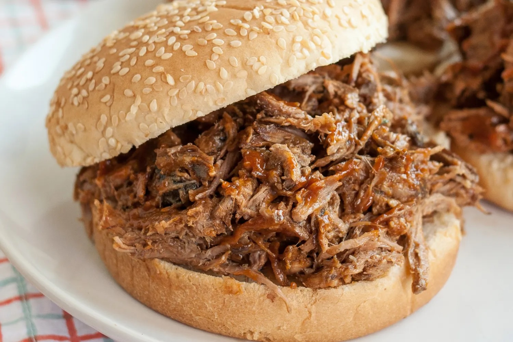

Slow Cooker Pulled Pork

Description
This recipe will make the most delicious pulled pork sandwhiches with minimal effort!
Ingredients
- 1 (2pound) pork tenderloin
- 1 (12 fluid ounce) can or bottle of root beer
- 1 (18 ounce) bottle of your favorite barbecue sauce
- 8 hamburger buns, split and lightly toasted
Steps
- Gather Ingredients
- Place pork tenderloin in a slow cooker; pour root beer over top
- Cover and cook on low for 6 to 7 hours
- Drain slow cooker and stir in barbecue sauce
- Server and hamburger buns and enjoy